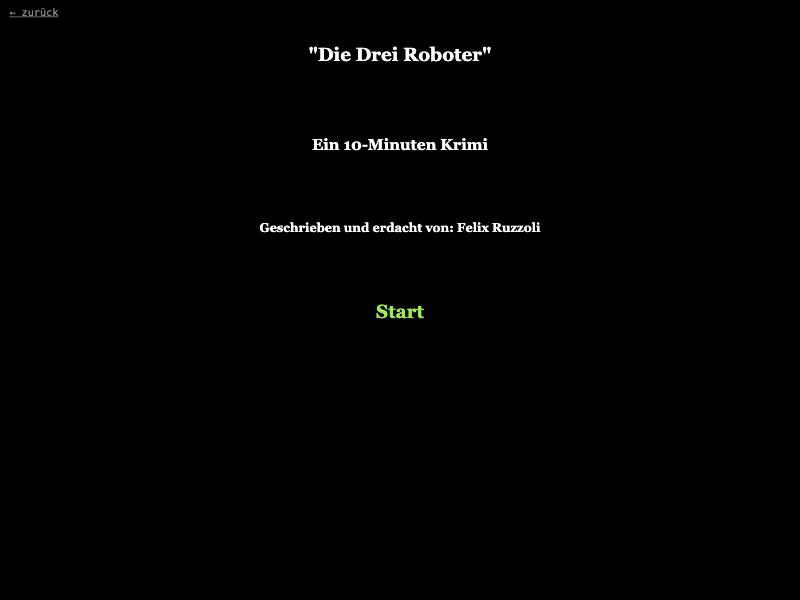

Die Drei Roboter
Completion ▰▰▰▰▰▰▰▰▰▱ 90% · finished story, a few typos left
A ten-minute detective story, in German, that I wrote in Twine. A night call, another murder: Alexander Reed lies dead at the foot of the attic stairs, and the only witnesses in the house are his three androids, James the butler, Samira the maid and Edgar the gardener.
You explore the house, read through the papers on the desk, and question the robots by typing keywords. Every android has its own answers, and some of them won't talk until you find a way to make them. When you think you've figured it out, you take the case to the machine court.
It's a small piece about loneliness and what makes a mind, and it plays in a few minutes.
Features
- 47 passages: a house with hallway, living room, study, kitchen, attic, garden and a locked garden shed.
- Keyword interrogation: you type a word into a prompt and each android answers (or refuses) on its own terms.
- Three robots, three states: James talks, Samira holds back, Edgar is muted until you fix him.
- A small item chain: shed key from James, a password-locked toolbox, a factory-reset tool.
- Two ways to use the tool on Edgar: reset him so he talks, or wipe him and lose his memory.
- A desk full of documents, including a pile you have to dig through three times to find the will.
- The machine court: four questions (who, why, which android cooperated, who made the call), wrong answers send you back to investigate.
- A title screen, a passage-name header and a green link colour scheme in the story stylesheet.
Under the hood
All state lives in six variables set in the first passage, "Am Anfang":
(set: $jamesAtCrimeScene to true)
(set: $hasGardenShedKey to false)
(set: $hasFactoryResetTool to false)
(set: $stateOfEdgar to "muted")
(set: $stateOfSamira to "awake")
(set: $stateOfJames to "awake")$stateOfSamira and $stateOfJames are set and never read again. I clearly planned to let you reset the other two as well.
The interrogations are one long if/else-if chain on a lowercased prompt. Samira's chain checks "edgar" twice; the second branch can never fire (passage "Samira befragen"):
(if: (lowercase: $keyword) is "james")[Er erledigt die Botengänge ...]
(else-if: (lowercase: $keyword) is "edgar")[Sein Refugium ist der Garten. ...]
...
(else-if: (lowercase: $keyword) is "edgar")[Sein Refugium ist der Garten. ...]Edgar's garden passage switches the interrogation link on his state, and the reset tool unlocks two more links:
{(if: $stateOfEdgar is "muted")[[[Befragung beginnen->Edgar's Systeme sind fehlerhaft]].]
(else-if: $stateOfEdgar is "reset")[[[Befragung beginnen->Edgar befragen]].]
(else-if: $stateOfEdgar is "wiped")[[[Befragung beginnen->Edgar's Erinnerung ist gelöscht]].]}The court reuses the failure passage with (display:) instead of linking to it (passage "Maschinengericht"):
(if: (lowercase: $answer) is "alex")[ ... [[Weiter->Maschinengericht Part 2]] ]
(else:)(display: "Weiter ermitteln")The toolbox password is a riddle: a handwritten note on the desk says "Passwort Hilfe: Meine ewige Liebe", and the answer is samira, not the ex-wife Jennifer.
Ideas & inspirations
The title screen calls it "Ein 10-Minuten Krimi". The story itself is the inspiration list: a near future where flying is no longer allowed ("aus der Zeit als Fliegen erlaubt war"), androids are everywhere, and the detective dislikes them ("Haben keine Gefühle, diese Dinger."). The twist is a classic one: the victim is also the culprit, having transferred his mind into the butler android, while the maid became conscious and his partner. The will that leaves a house and freedom to the three robots is the motive's paper trail. The unused $stateOfSamira/$stateOfJames variables hint that resetting or wiping the other androids was planned too.
Where it started, where it ended
There is no history in the file beyond the story format versions (Twine 2.3.5, Harlowe 3.1.0), so I can only describe what is there. The idea was a short murder mystery where your witnesses are machines and you question them by keyword instead of from a menu. It ended as exactly that: a complete case with a solution report and a thank-you screen.
State of the repo
It's a single exported Twine HTML file, not a repo. The story is finished: every path leads somewhere and the court has a proper ending. What's left is polish: German typos ("Werkzustands", "Schüssel", "stimt", "offensichtlicht", "Input/Ouput"), the duplicated "edgar" branch, two state variables that are never used, and the reset/wipe links on Edgar stay visible after you've already used one. Keyword matching is exact, so "Alexander" works for Samira but not for Edgar. About 90% of what it set out to be.
Is it a real game?
Complete. It has a full loop: explore, collect clues, unlock Edgar, solve the case in court, get the ending. There's no way to lose; wrong answers in court just send you back to the crime scene. It's ten to fifteen minutes long, most of it spent guessing the right keywords, and once you know the solution there's no reason to replay.
Screenshots
